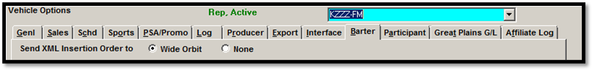

Station XML
On Version 7.0 and above, an export that is similar in format to the Proposal XML export is available for use with Wide Orbit. This export is called Station XML. The Station XML export outputs data for rep vehicles (and conventional vehicles on version 7.1) set to export to Wide Orbit. When enabled, this export is generated automatically when a proposal or hold is changed to an order. It can also be run manually by viewing an Order on the Orders screen in “View” mode and by pressing the Export button.
Each Station XML vehicle will have a separate XML file created for it in the destination folder (unlike the Proposal XML for example, which combines multiple vehicles onto a single file).
Setup Instructions
Traffic.ini Setup
To activate this feature, a path must be added to the Traffic.ini file in the Locations section of the Traffic.ini. Example below:
WideOrbitStationXMLPath = c:\insertions
Replace the "c:\insertions" shown in the example with the folder where Wide Orbit expects the Station XML files to be.
On earlier software versions, this path was labeled “InsertionXMLPath”. While this path will still work, it is recommended to now use “WideOrbitStationXMLPath” instead.
If there is no need to use the Contract Insertion feature, the WideOrbitStationXMLPath can simply not be entered on the Traffic.ini.
When the Station XML path is not entered on the Traffic.ini, there will be no “Export” button on the Orders screen, and therefore no way to generate the Station XML export.
Vehicle Options Setup
Vehicle Name Requirements
The vehicle name is used to populate the call letters and band information on the export.
There is an example below of how the example vehicle name "KZZZ-FM" will appear on the Station XML export:
<RadioStation callLetters='KZZZ' band='FM' outletId='OUT0' />
So that the output is compatible with the Wide Orbit system, the vehicle name must follow specific rules. The call letters must be three or four letters long, followed by a dash, followed by a band that consists of any of the following options: FM, AM, DV, SM or N. (For example, KZZZ-DV would be acceptable.)
If the call letters are not 3 or 4 letters long, when trying to run the export, a message will appear that says "Wide Orbit files failed - Outlet's 'call letters' must be 3 or 4 characters."
If the band does not match one of the accepted formats, when trying to run the export, a message will appear that says "Wide Orbit files failed - Outlet's 'band' not an allowed value."
The vehicle name must also match the station call letters of a station defined in the Affiliate System.
Barter Tab
On version 7.0, only rep type vehicles will be included on the Station XML export. To enable a rep vehicle to be included on the export, in Vehicle Options -> Barter, set the “Send XML Insertion Order to” setting to “Wide Orbit”.

If there's multiple rep vehicles on an order, and not all of the vehicles have the "Wide Orbit” radio button selected, those vehicles without it selected will be excluded from the output of the export when it is generated.
On version 7.1, this option is also available for conventional vehicles in addition to rep vehicles. If a single contract has a mix of conventional vehicles that are set to export to “Wide Orbit” and one or more that aren’t, only the “Wide Orbit” vehicles will be included on the export files.
Station XML Export Procedure
The Station XML export will get created automatically in the folder specified in the “WideOrbitStationXMLPath” on the Traffic.ini when a proposal or hold is changed to an order (at the time of saving the change). When the Station XML file gets created, a message will appear on the screen that reads "File Exported" with the export filename shown.
It is also possible to manually create a Station XML export file by following these steps:
- Bring up an Order on the Orders screen in View mode. Important note: there must be at least one rep vehicle on the Order that is set to export to “Wide Orbit” (on version 7.0), or at least one conventional vehicle that is set to export to “Wide Orbit” (on version 7.1).
- Press the Export button in the upper right corner of the screen.
- If the current revision has not been exported previously, the export file will be generated automatically. A “File exported” message will appear when the file is successfully exported.
- If the current revision has been previously exported, a message will appear that states that the original order was already generated and asks whether to regenerate the order, or cancel. Press Yes to regenerate the order, press No to cancel.